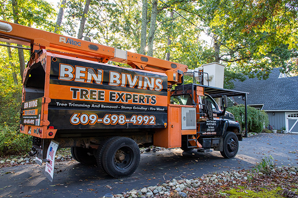

Living along the coast provides you with so many advantages. We hate to mention it, but there are some drawbacks. One of the biggest disadvantages is that weather can get pretty severe on the coast. Many towns bordering and just off the water are very familiar with the high winds and flooding that can wreak havoc to buildings and properties. One thing that makes this even more dangerous is overgrown, unhealthy trees. Trees of all ages, types, and sizes need proper care. Many people think that mature trees should be left alone. This can result in a very unhealthy, large tree which is also very dangerous. Manahawkin tree service like pruning or trimming help trees in a variety of ways. These essential services allow them to provide you with the most benefits.
Manahawkin Tree Service Reduces Weight
Do we have your attention? Dead branches can add a lot of weight and stress to a tree trunk. Essential tree services, like trimming and pruning, reduces the pressure and strain to that tree’s trunk. Removing that extra weight enables the trunk to grow straight and strong. Neglecting to prune sickly branches can result in an oddly formed trunk. This greatly reduces the structural integrity of the entire tree. This, in turn, leaves your home and property at risk of damage from falling branches. Even worse, weak trunks can split causing the whole tree to come down. Not only do pruned, healthy trees look better, they’re safer.
Well-Trimmed Trees Cause Less Damage
Anyone who lives anywhere near the shore has either had a tree fall on their property, or knows someone who has. Manahawkin tree service safely removes and disposes of dead branches BEFORE they break off. Heavy, dead branches can fall on people and pets, and cause a lot of destruction to landscaping. A branch large enough can even damage hardscaping. All of this is dangerous and costly. While we do provide emergency tree service, the better option is call us to take care of the branches safely before they cause devastation. Protect your family and your yard and give us a call to schedule your tree service today.
Proper Manahawkin Tree Service Prevents Diseases
A healthier tree is better able to fight off infestations and diseases. Just as many plants do, a tree will spend more energy trying to save or heal an injury than towards general growth of healthy limbs. This is why removing unhealthy limbs helps trees. This allows all of the trees energy to go into growing and supporting strong, healthy branches and leaves. Another key element in pruning is when to do it. It is better for the tree in the long run to do any trimming and pruning in the fall while the tree is dormant. As we mentioned before, a tree will expend extra energy into healing an injury. When limbs are cut during the growing season, the trees development could be stunted. Plus, if all the trees attention is being paid to a select few locations, pests can freely take hold of the tree.
Tree Removal is Important Also

Not only is it important to take good care of the trees on your property, it is very important to know when removal is best. While large, mature trees are beautiful, their roots can be far reaching. Roots from trees can destroy driveways and other hardscaping. Even worse, cracks in your home’s foundation could be the next step. Speaking with one of our arborists can help take a look at all of the trees on your property to see if you can benefit from tree removal.
Trees Deserve Care and Attention Too
Too often, trees are overlooked when it comes to landscaping. Once they’re planted and rooted, many homeowners don’t provide any additional care. But trees are not a set it and forget it item. They need attention and care to help them provide all the benefits they have to offer. If you need Manahawkin tree service, contact us today!